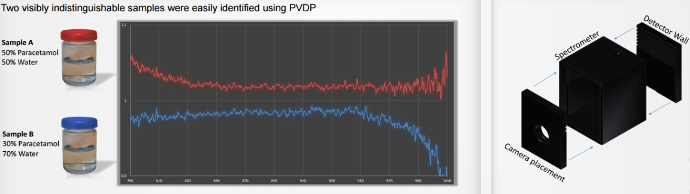

Portable verification device for pharmaceuticals
Today near-infrared spectroscopy (NIRS) is being used to determine whether a drug is authentic or counterfeit by analyzing its absorbance spectrum. This is a reliable, but still a moderately expensive method for many of the affected countries.
The objective of this project was to create a simple spectrometer with the use of a 3D-printer as well as inexpensive and available objects. The near-infrared spectrum was captured through a CCD camera, the results were calibrated and compared to a professional spectrometer. As a bonus task, two samples with different concentrations were to be tested and analyzed through the produced spectrometer.
Students Dawood J. Qureshi, Kashif Ilyas, Anders Jansen and Alexander K. Kristensen succeeded in proving the concept by using merely inexpensive techniques. They showed how two visually similar substances had significantly different spectrum absorbance.
This is one of the two most exciting submitted ideas - a mobile spectrometer! The idea has the potential to solve a growing global and serious problem with counterfeit drugs in a good way, thus help to save lives and reduce harm caused by the use of dangerous counterfeit drugs. - The 2014 jury of the yearly concept competition at HiOA